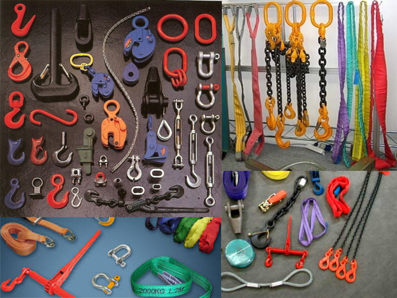
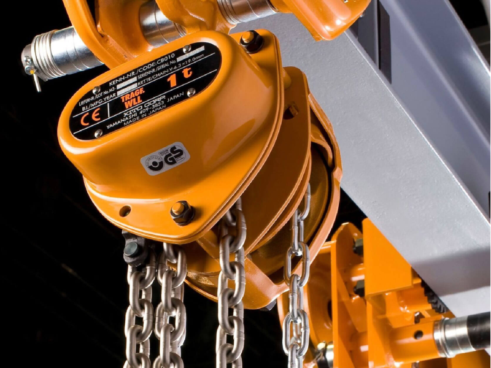

<div fxLayout="row" fxLayoutAlign="center center" style="margin-bottom: 10px">
  <button mat-stroked-button><mat-icon class="mat-18">skip_previous</mat-icon></button>
</div>
<mat-grid-list cols="2" rowHeight="1:1">
    <a [routerLink]="['/user/la']" routerLinkActive="router-link-active" >
        <mat-grid-tile mat-elevation-z4 matRipple id='trigger' class="meal-photo">
            <mat-grid-tile-header>Teherfelvevő eszközök</mat-grid-tile-header>
            
        </mat-grid-tile>
    </a>

        <mat-grid-tile mat-elevation-z4 matRipple id='trigger' class="meal-photo">
            
            <mat-grid-tile-header>Emelőszerkezetek</mat-grid-tile-header>
        </mat-grid-tile>
        <mat-grid-tile mat-elevation-z4 matRipple id='trigger' class="meal-photo">
            
            <mat-grid-tile-header>Emelőberendezések</mat-grid-tile-header>
        </mat-grid-tile>
        <mat-grid-tile mat-elevation-z4 matRipple id='trigger' class="meal-photo">
            
            <mat-grid-tile-header>Daruk, futómacskák</mat-grid-tile-header>
        </mat-grid-tile>
      </mat-grid-list>
